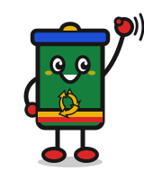
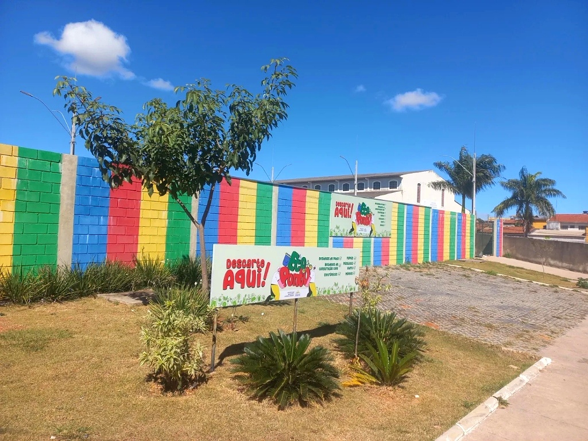
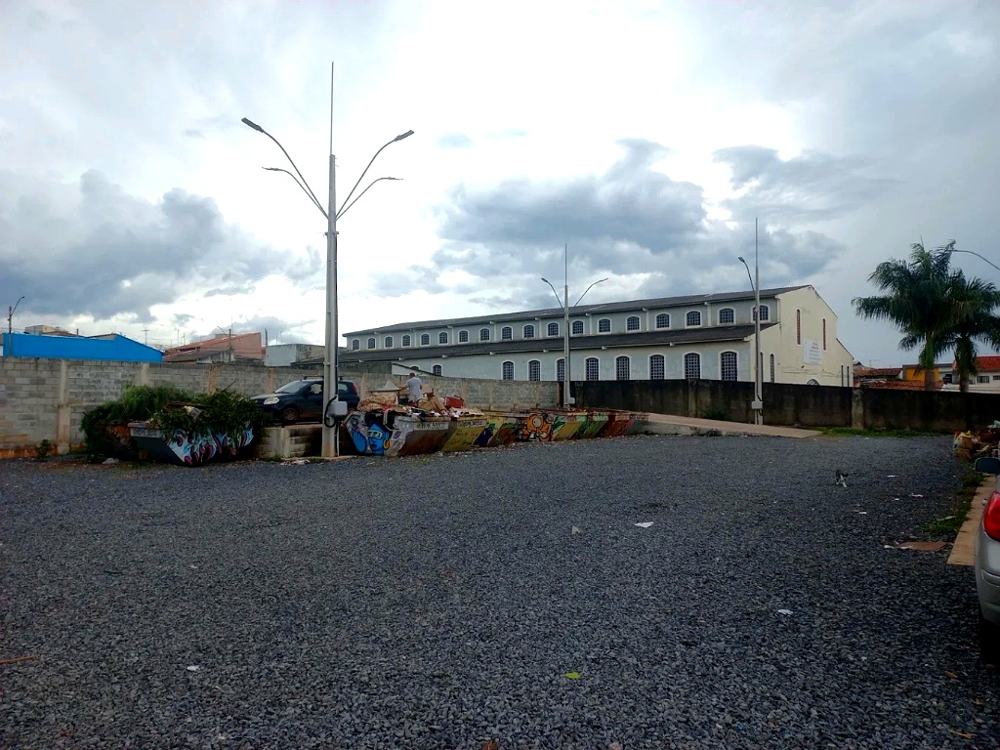
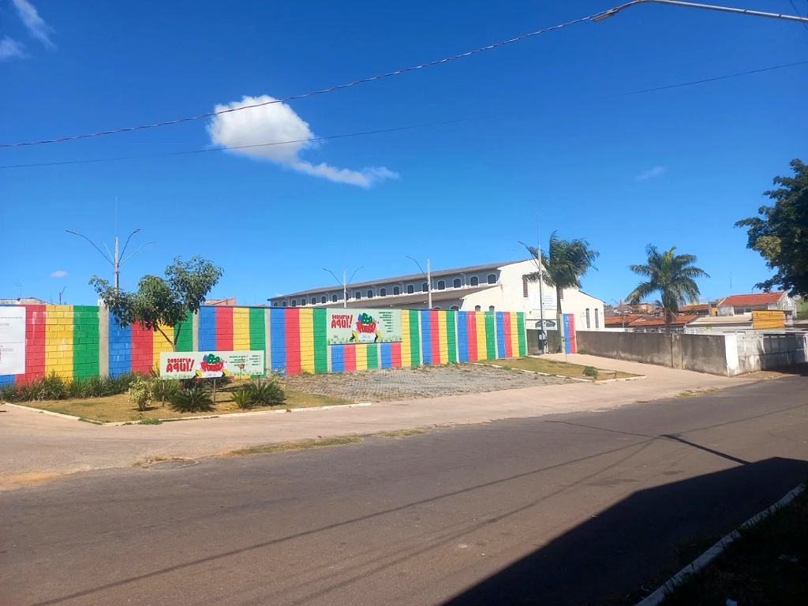

Ecoponto
Cidade Ocidental

👆 Toque aquiO local oficial da prefeitura para o descarte correto de materiais recicláveis e resíduos de pequeno volume.
Atendimento e agendamento da SMLU: (61) 99906-4704

7h às 19h
Aberto todos os dias
Atendimento ininterrupto de segunda a domingo, inclusive feriados municipais. Sem intervalo para almoço.
Super Quadra 17 (SQ 17), Quadra 08, área especial (ao lado da Capela Nossa Senhora de Fátima).
Cidade Ocidental - GO. Localização fácil ao lado da capela, identificada de longe pelo muro colorido.
Digite o que você deseja descartar
O que recebemos
Leve seus materiais recicláveis e pequenos entulhos. O recebimento é 100% gratuito para toda a população de Cidade Ocidental.
Vidro, plástico, papel e papelão.
Garrafas, potes de vidro, caixas de papelão desmontadas, embalagens plásticas limpas, jornais e recipientes secos.
Computadores, celulares e televisores.
Monitores, impressoras velhas, cabos, carregadores, eletrodomésticos de pequeno porte e eletrônicos queimados ou fora de uso.
Entulho de pequenas obras e reformas.
Restos de alvenaria, concreto, pedaços de tijolo, azulejo e sobras secas de argamassa.
Seu sofá está velho? A prefeitura busca.
Grandes objetos e móveis: sofás, camas, armários, mesas e colchões. Leve direto ao Ecoponto ou solicite o agendamento de recolhimento na sua casa pelo WhatsApp.
O que NÃO aceitamos
Por normas sanitárias e risco de contaminação ambiental, é proibido descarregar estes materiais no pátio:
Lixo orgânico ou restos de comida
Aguarde o caminhão da coleta domiciliar regular que passa nos dias da sua quadra. Não leve restos de alimento ao Ecoponto.
Podas de árvores em grandes quantidades
Para recolhimento de galhos volumosos, contate a Secretaria de Limpeza Urbana (SMLU) pelo WhatsApp (61) 99906-4704.
Pilhas, lâmpadas e produtos químicos
Produtos tóxicos e químicos perigosos exigem devolução direta em farmácias, supermercados e comércios credenciados.
Fotos do local
Imagens do espaço real na SQ 17 para facilitar sua identificação ao chegar de carro ou a pé.
Entrada principal
Muro característico nas 4 cores

Pátio de caçambas
Descarga organizada por tipo de material

Ponto de referência
Ao lado da Capela Nossa Senhora de Fátima